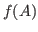
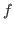

We present a new iterative method for computing

, derived from a relationship between the standard Lanczos method and a Gauss-Radau quadrature rule. We show that this method, called the Radau-Lanczos method, converges when
is a Stieltjes function. We also show that the restarted version of this method converges and present numerical results showing this method performing better than the standard Lanczos method in terms of attainable error norm and iteration count.